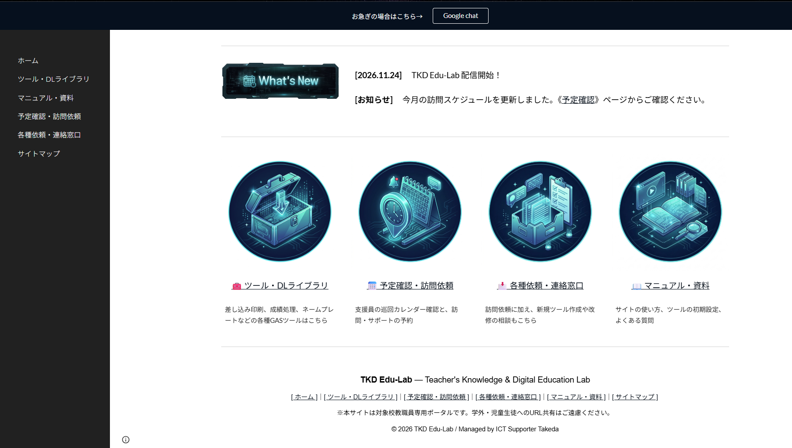
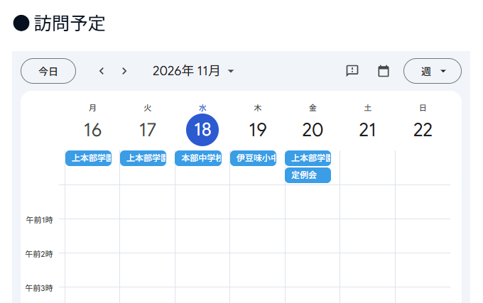
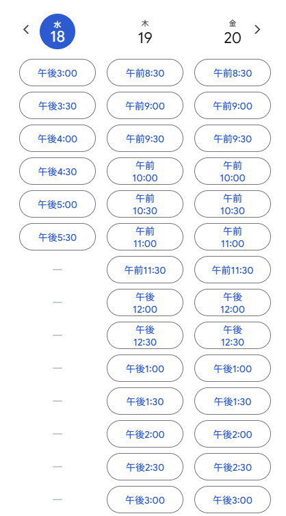
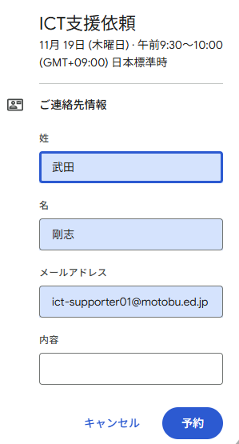
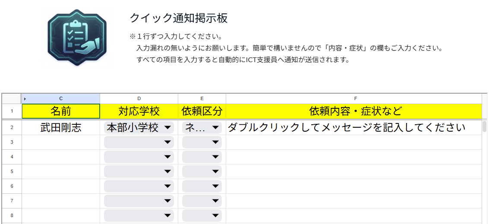

Teacher's Knowledge & Digital Education Lab - 総合利用ガイド
TKD Edu-Lab（Teacher's Knowledge & Digital Education Lab）は、先生方の知見とデジタルの力で教育現場を支える、総合的なICTサポート基地局です。
motobu.ed.jp）のアカウントでのログインが必須となります。サイトを開くと、最新のお知らせや主要ページへの誘導カード、サイドメニューが分かりやすく配置されています。

| メニュー項目 | 主な内容・できること |
|---|---|
| 🏠 ホーム | 最新のお知らせ、今月の訪問スケジュール更新情報、クイックリンク。 |
| 🧰 ツール・DLライブラリ | 差し込み印刷、成績処理、ネームプレートなどの各種GASツールのダウンロード。 |
| 📅 予定確認・訪問依頼 | 支援員の巡回カレンダーの確認と、個別サポート・訪問の予約機能。 |
| 📩 各種依頼・連絡窓口 | 訪問依頼に加え、新規ツール作成やシステムの改修・相談窓口。 |
| 📖 マニュアル・資料 | 本サイトの使い方、各種ツールの初期設定手順、よくある質問など。 |
支援員の巡回スケジュール確認と、Googleカレンダーの予約機能を活用した個別サポートの予約が行えます。

週間・月間表示で、各学校への訪問予定が一目で確認できます。

▲ 予約時間選択画面

▲ 詳細入力画面
※予約完了後、自動確認メール（Gmail）が送信され、カレンダーのリマインダーも自動設定されます。
授業中の急なトラブルや、システムの改修・新規作成の相談、連絡事項を行うための窓口です。
